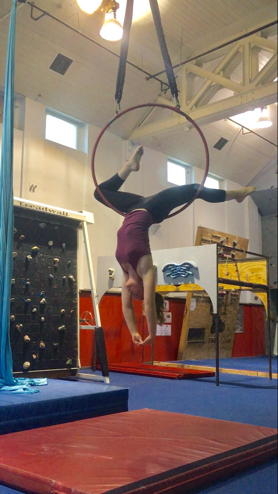
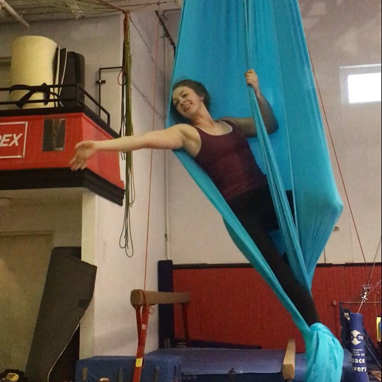
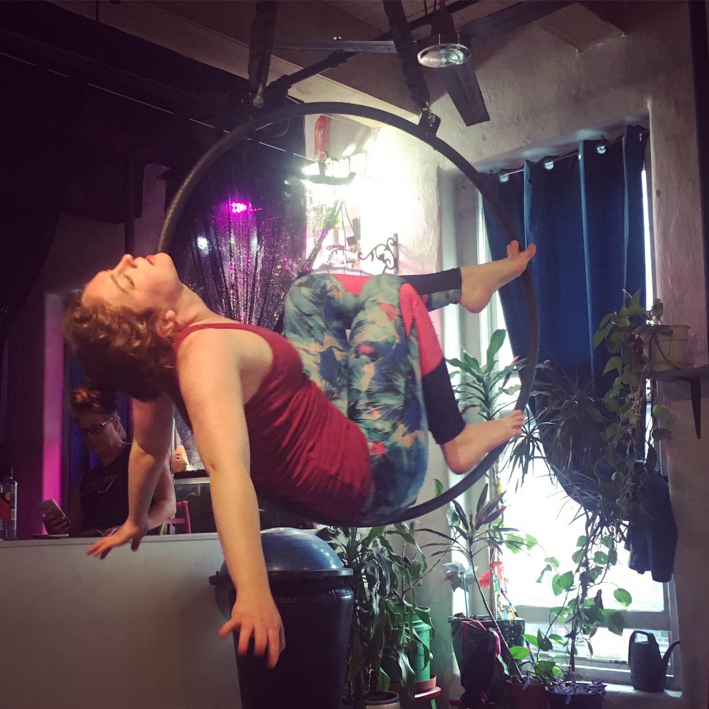
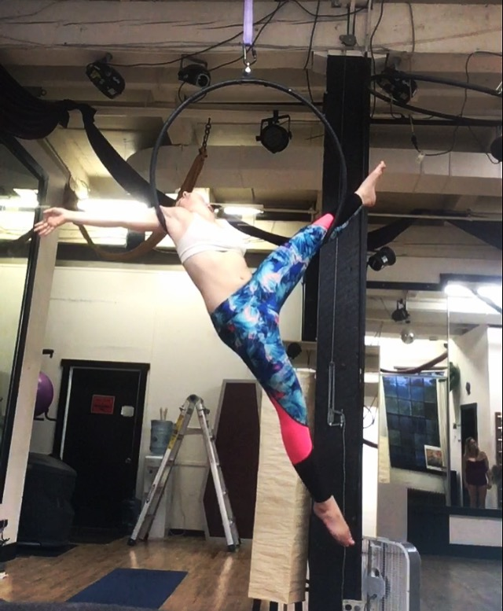
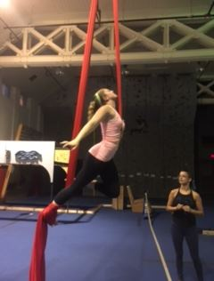
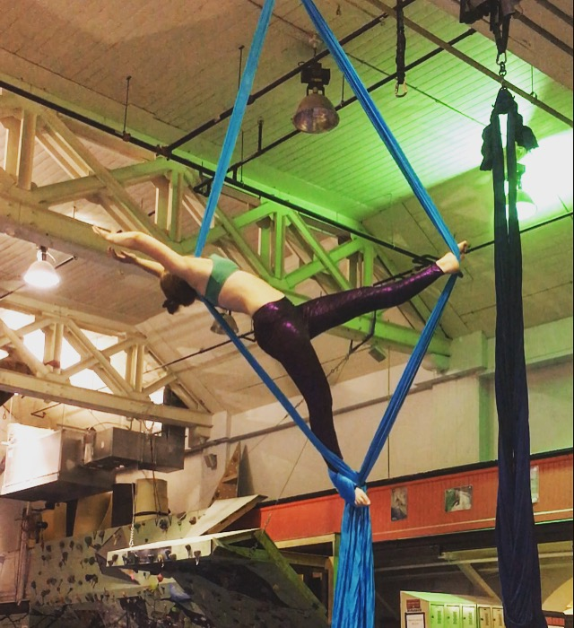
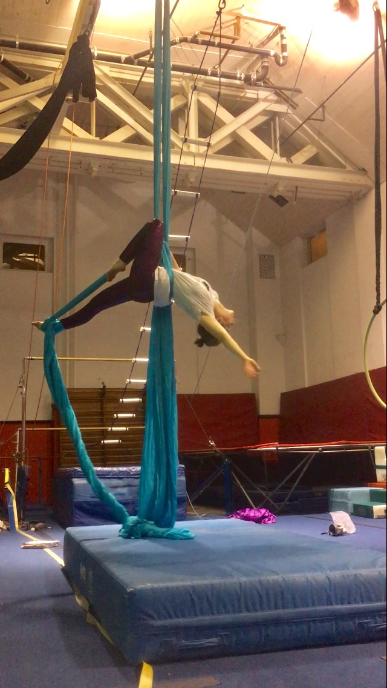
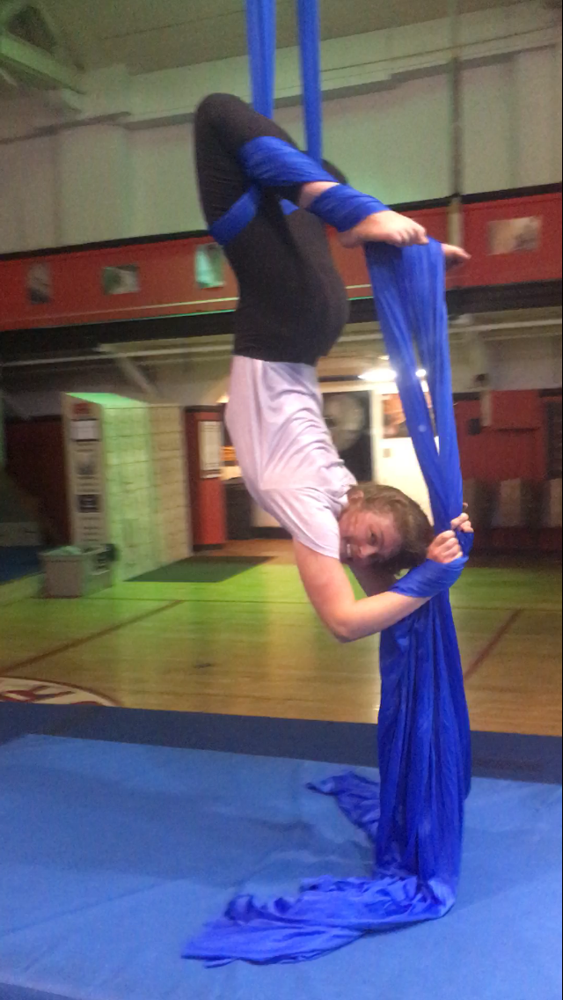

Colleen's Circus Gallery
I love the aerial arts. I love pushing myself physically and artistically through Aerial Acrobatics, namely the Aerial Silks and Lyra (Aerial Hoop) apparatuses. My dream is to retire and open my own studio in the Carribean.







